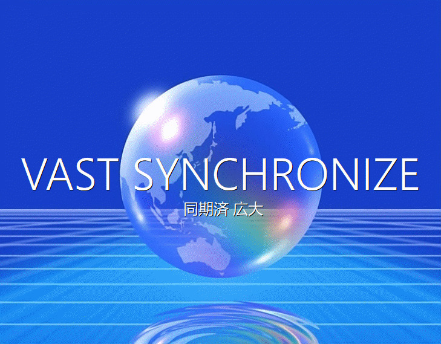
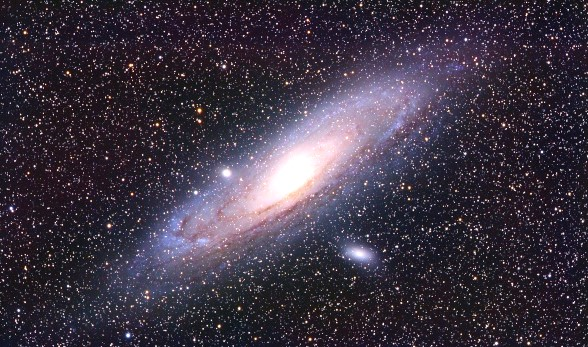
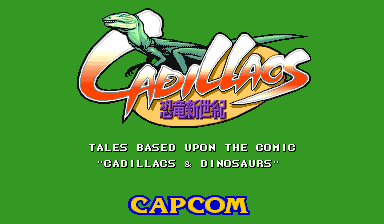
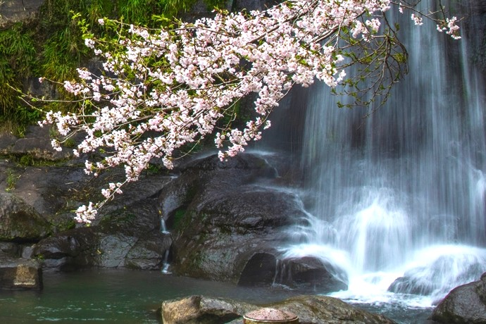
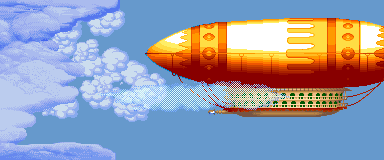
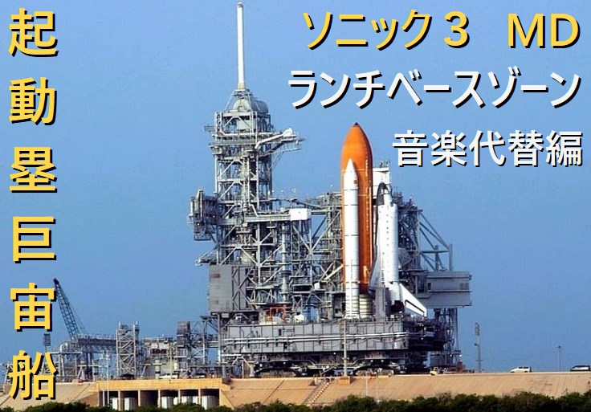
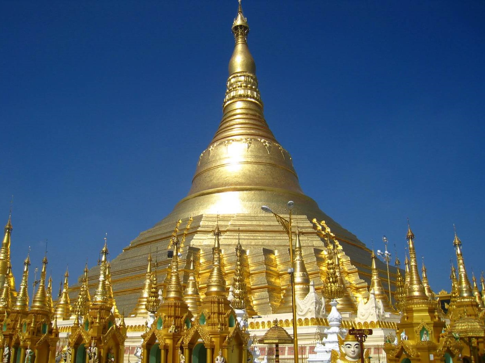
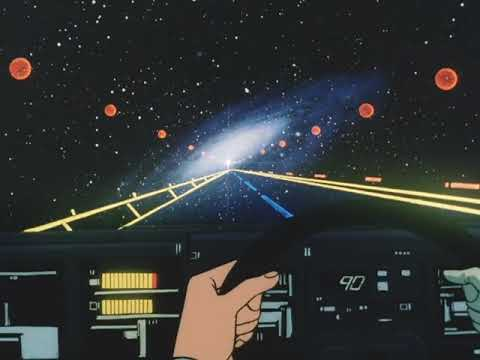
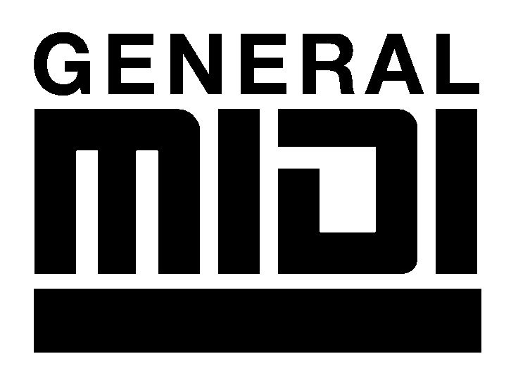
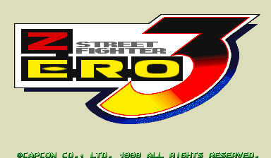

Hi! Welcome to my second website! This page will let you see any changes when I upload some new music for you to enjoy! Visit my "About" page to let you know more about my music in this website. You can navigate to my "Links" page and hear my music from my other accounts on popular music streaming sites for some more audience! Enjoy your visit here! |
|
|
|  | Original Composition - Vast Synchronize
Finished on: 12/18/2025 |
.mp3 file |
My original composition using instrument samples from various PCM synth workstations and sample CDs. The theme is more of a soothing techno-esque planetary venturing network envisioning wholeness and oneness. |
 |
Original Composition - Gliss Floral
Finished on: 12/9/2025 |
.mp3 file |
My original composition using only the vibraphone instrument sample from the workstation keyboard named Yamaha EX5. Painting by: Pu Zuo (溥佐) |
|  | Original Composition - Eversphere Gallery
Finished on: 11/30/2025 |
.mp3 file |
My original composition using piano and string samples from two sample CDs created by Optical Media International (OMI) which were Universe Of Sounds and Sonic Images Library. |
|  | Original Composition - BONUS STAGE [Cadillacs 恐竜新世紀]
Finished on: 11/24/2025 |
.mp3 file |
My original composition using instruments samples entirely from the Capcom Power System Dash arcade game Cadillacs Kouryuushinseki (Cadillacs & Dinosaurs). |
|  | Original Composition - 河滝 (Kawa-taki ~ River
Waterfall)
仕上したに10/16/2025 |
.mp3 file |
ぼく日本式音楽日本楽器使用して1980年代と90年代シンせサイザー , PCMキーボード, そしてサンプルCD. |
_000.png) |
Original Composition - 無限全使 (Mu-gen Zen-shi ~
Infinite Evervol)
Finished on: 8/20/2025 |
.mp3 file |
My original composition using instruments used in at least two Super Famicom games. I went for a sort of ambient and rousing theme for this soundtrack that I envisioned for embracing the limitless and unfathomed potential of being a live and all-doing species. |
|  | Original Composition - Overworld Adventure
Finished on: 8/10/2025 |
.vgm file |
My original composition using instruments used in various Capcom Power System games. I created a sort of adventureous and energetic theme to this tune that would suit a platformer stage above the clouds or skies. |
|  | Original Composition - 起動塁巨宙船 (Ki-dou-rui Nao
Chuu-fune ~ Launch Base Giant Aircraft)
Finished on: 6/21/2025 |
.vgm file |
My original composition using instruments mainly from SONIC THE HEDGEHOG 3 for the Sega Mega Drive. This is basically my alternate envision of the Launch Base Zone background music from STH3 using its zone's music instruments and a few more instruments used in other Mega Drive games. |
 (Unl)_001.bmp) |
Original Composition - TIME 2 FIGHT!
Finished on: 6/10/2025 |
.vgm file |
My original composition using the instruments used in the Mega Drive game Captain Lang, also in most Taiwanese Mega Drive unlicensed games. With samples used in mostly unlicensed Mega Drive fighting games, I composed this to rhythmize the voices and sound effects to almost every part of this music, as a tribute to the bootleg games. |
|  | Original Composition - 下東道 (Ashi Tou-dou ~ Path to Bottom-East) Finished on: 5/29/2025 |
.mp3 file |
My original composition using various instruments, synths, and samples from 1990s sample CDs and PCM synth workstation keyboards. This is my first kind of ethnic-style music influenced mostly from southern east-asia. Picture footage: yangondaytours |
|  | Original Composition - Astro Cruise Finished on: 4/14/2025 |
.mp3 file |
My original composition using various instruments, synths, and samples from 1990s sample CDs and PCM synth workstation keyboards. I gave this track a feeling of driving or cruising through a neon-like solar roadway in the middle of outer space. Thumbnail footage: ダーティペア ~ by: Tsukasa Dokite(土器手 司) |
|  | Original Composition - Rock Threw! Finished on: 3/25/2025 |
.mp3 file |
My original composition with the instruments used in the General MIDI default PCM synth module from the Roland Sound Canvas 55. This my first kind of rock-influenced music. |
 |
Original Composition - Change for the Cause!
Finished on: 3/18/2025 |
.mp3 file |
My original composition using random instruments used in various Super Famicom games. This was made to have a more empowering marching style band music to promote some sort of philanthropy or protest movement. |
|  | Original Composition - 新香港 (Shin Honkon ~ Neo Hong Kong) Finished on: 3/6/2025 |
.mp3 file |
My original composition using the exact
instruments used in the Capcom Power System II arcade game STREET FIGHTER |
_000.jpg) |
Original Composition - アニメ 紹介 (Ah-ni-me Shōkai ~ Animé Introduction) Finished on: 2/7/2025 |
.vgm file |
My original composition using random instruments used in various Sega Mega Drive games. This was made to replicate some opening intro music from animé shows in the 90's. |